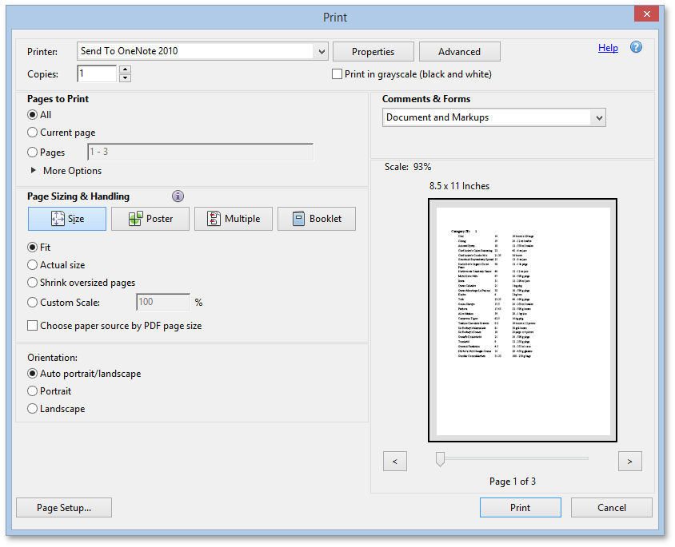

Print a Report Using the PDF Web Browser Plug-In
If the PDF plug-in is not installed in your web browser, the default browser printing approach is used to print report documents. For details and issues related to this approach, see Print Reports Using the Native Functionality of a Web Browser.
A web browser that supports the PDF plug-in allows you to secure consistent report printing results, and frees you from having to routinely evaluate print settings prior to each printing operation. This plug-in is available with the installation of Adobe Reader®. Refer to the Install and Activate the Adobe Reader Plug-In for Printing in a Web Browser topic for information on installing and configuring this plug-in in your browser.
To print the entire report document, click the Print the report button on the Document Viewer's toolbar. You can also print the currently displayed document page by clicking the Print the current page button.
When you click any of these buttons, the Document Viewer converts the report document to PDF. After this, the dedicated Print dialog is initiated to print the resulting PDF file. Converting a document to PDF preserves its layout, thus the document printed using the PDF plug-in will look on paper exactly as it was designed (pixel perfect printing).
The following image shows the Print dialog of the Adobe Reader® plug-in.
